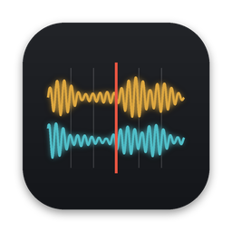

SYNCWAVE ProSyncWave Pro cleans up your library, suggests the next track, builds sets and plays them on two synced decks with Auto DJ. Free, with no account and no internet connection. SyncWave Pro kütüphaneni temizler, sıradaki parçayı önerir, set kurar ve onu senkronlu iki deck'te Auto DJ ile çalar. Ücretsiz; hesap yok, internete bağlanmaz.
Download v2.4.0SyncWave Pro is free and isn't notarized by Apple (that needs a paid Apple developer membership). So the first time you open it, macOS says "SyncWave Pro" Not Opened / cannot be verified. The app is safe; this is how you open it:SyncWave Pro ücretsizdir ve Apple'ın noter onayından geçmemiştir (bu, ücretli bir Apple geliştirici üyeliği ister). Bu yüzden ilk açılışta macOS "SyncWave Pro" Açılmadı / doğrulanamadı der. Uygulama güvenlidir; şöyle açılır:
You only do this once. Windows may show "Windows protected your PC": click More info > Run anyway. Full instructionsBunu yalnızca bir kez yaparsınız. Windows "Windows bilgisayarınızı korudu" derse Ek bilgi > Yine de çalıştır'a basın. Ayrıntılı kurulum
One app, from a messy music folder to a finished set.Dağınık bir müzik klasöründen bitmiş bir sete, tek uygulama.
Load a folder, a rekordbox XML or a Mixed In Key CSV. BPM, key, energy and genre for every track, with a mini waveform.Bir klasör, rekordbox XML'i ya da Mixed In Key CSV'si yükle. Her parçanın BPM'i, tonu, enerjisi ve türü; yanında mini dalga.
Find duplicates, broken files and missing tags before they surprise you in a set.Kopyaları, bozuk dosyaları ve eksik etiketleri sette karşına çıkmadan bul.
Suggestions that fit by key (Camelot), tempo and energy.Ton (Camelot), tempo ve enerjiye uyan öneriler.
Build a set in sections (opening, groove, peak) and see its length and flow.Seti bölümlerle kur (açılış, groove, zirve); süresini ve akışını gör.
Beat-locked sync, key lock, hot cues, loops, EQ, filter, effects, sampler and MIDI controllers.Vuruşa kilitli senkron, ton kilidi, hot cue, loop, EQ, filtre, efektler, sampler ve MIDI kontrolcü.
Plays your set in order and mixes each track into the next on the beat.Setini sırayla çalar, her parçayı bir sonrakine vuruşunda mikser.
Version 2.4.0. Pick the file for your computer.Sürüm 2.4.0. Bilgisayarına uygun dosyayı seç.
SyncWave Pro is free and isn't notarized by Apple (that needs a paid Apple developer membership). So the first time you open it, macOS says "SyncWave Pro" Not Opened / cannot be verified. The app is safe; this is how you open it:SyncWave Pro ücretsizdir ve Apple'ın noter onayından geçmemiştir (bu, ücretli bir Apple geliştirici üyeliği ister). Bu yüzden ilk açılışta macOS "SyncWave Pro" Açılmadı / doğrulanamadı der. Uygulama güvenlidir; şöyle açılır:
You only do this once. Windows may show "Windows protected your PC": click More info > Run anyway. Full instructionsBunu yalnızca bir kez yaparsınız. Windows "Windows bilgisayarınızı korudu" derse Ek bilgi > Yine de çalıştır'a basın. Ayrıntılı kurulum
Not sure which Mac you have? Apple menu > About This Mac shows the chip. Mac'in hangisi? Apple menüsü > Bu Mac Hakkında işlemciyi gösterir. · All releases on GitHubGitHub'daki tüm sürümler
The app isn't notarized by Apple or signed by Microsoft, so the first launch takes one extra step. It's a one-time thing.Uygulama Apple'ın noter onayından geçmemiş, Microsoft imzası da yok; bu yüzden ilk açılışta bir adım fazlası gerekir. Yalnızca bir kez.
Run this in Terminal:Terminal'de şunu çalıştırın:
xattr -dr com.apple.quarantine "/Applications/SyncWave Pro.app"
Just replace the app or run the new installer. Your library and analysis stay.Uygulamayı değiştirin ya da yeni kurulumu çalıştırın. Kütüphane ve analizler korunur.
SyncWave Pro never connects to the internet. Your music, library and analysis never leave your computer.SyncWave Pro internete hiç bağlanmaz. Müziklerin, kütüphanen ve analizlerin bilgisayarından çıkmaz.
8ce3cf23ce7be1147f1fbdfef049424c5c2c152fed70f2075b6f4c82e110d2f7 SyncWave-Pro-2.4.0-Windows-Portable.zip d1bfee397af706fc788a0d9e4c9606ba21ff38b4304a34da39ca869335bd1d6c SyncWave-Pro-2.4.0-mac-AppleSilicon.zip 732aaf3b8f0ee70aef33e5ab7123ce862ced383a21d30bd4237a65e5856c0268 SyncWave-Pro-2.4.0-mac-Intel.zip a46d3e4fbd51ec6e417b6f584155cdb3a3aa69b4e64fc3c8c30f42ae0a0c4f0e SyncWave-Pro-2.4.0-Windows-Setup.exe